Pathway · Textiles
Textiles
Seventeen Diné textiles from the University of Texas collections: Chief blankets in the second and third phase styles, saddle and shoulder blankets, a woman's shawl, rugs, and two woven samplers.
All seventeen are from the Frederic Allen Williams Collection. The prefix is the accession group: 2148 is the Texas Memorial Museum accession of the collection; the accession record names 1654 for further Williams items; 1074 and 1633 hold the rest.
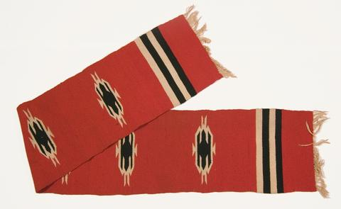
2148-586Woman's Shawl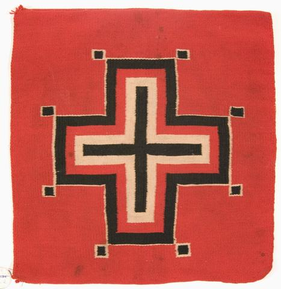
2148-588Woven Sampler1890-1900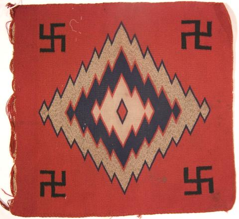
2148-589Woven Sampler1890-1900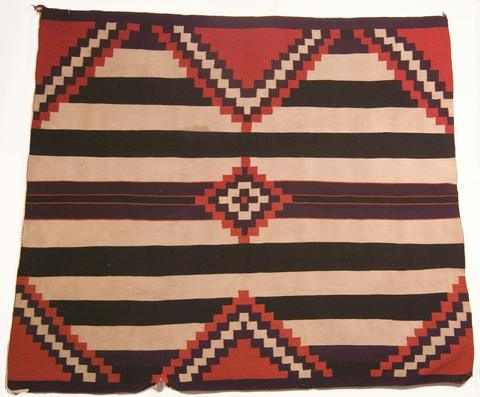
2148-593Chief Blanket1880-1890 · Third Phase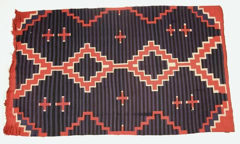
2148-597Blanket1890-1900 2148-606Chief Blanket1880-1890 · Third Phase Transitional
2148-606Chief Blanket1880-1890 · Third Phase Transitional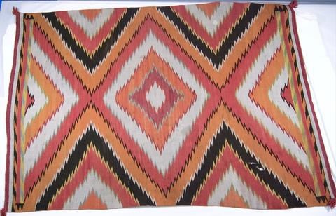
2148-611Rug1880-1890 · Traditional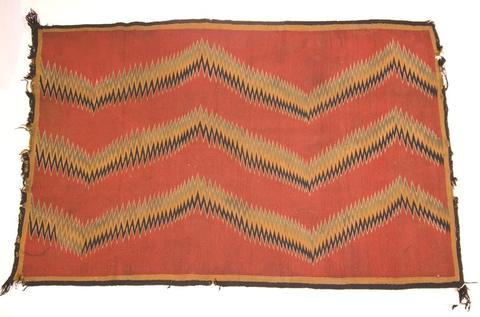
2148-612Blanket1870-1890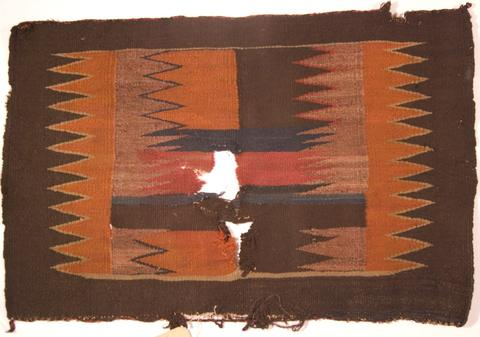
2148-622Saddle Blanket1880-1890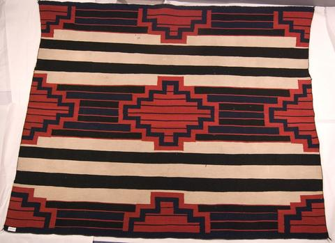
1074-101Chief Blanket1860-1900 · Third Phase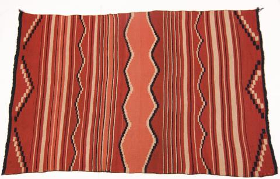
1074-102Child's Blanket1860-1870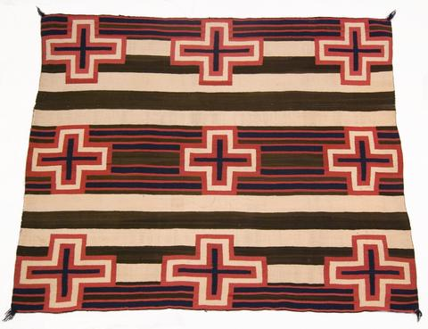
1074-106Chief's Shoulder Blanket1860-1900 · Second Phase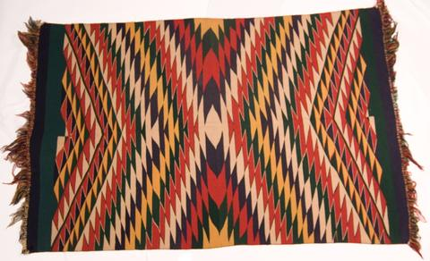
1074-112Saddle Blanket1890-1900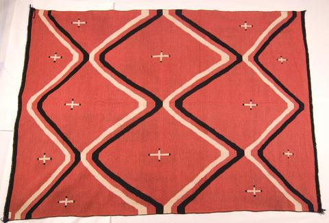
1074-114Shoulder Blanket1860-1870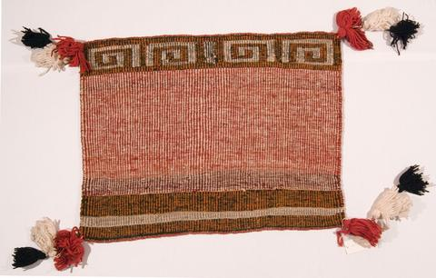
1633-76Saddle Blanket1950-1960 · "Sunday" saddle blanket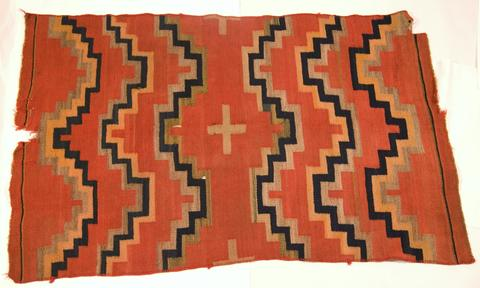
1654-129Blanket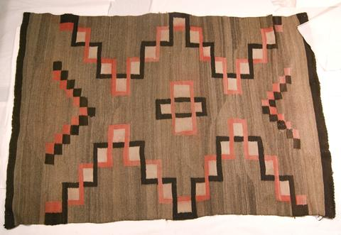
1654-131Rug1890-1910 · TransitionalContext
Essays from the 2018 site on dyes, trade catalogs, weavers and motifs.